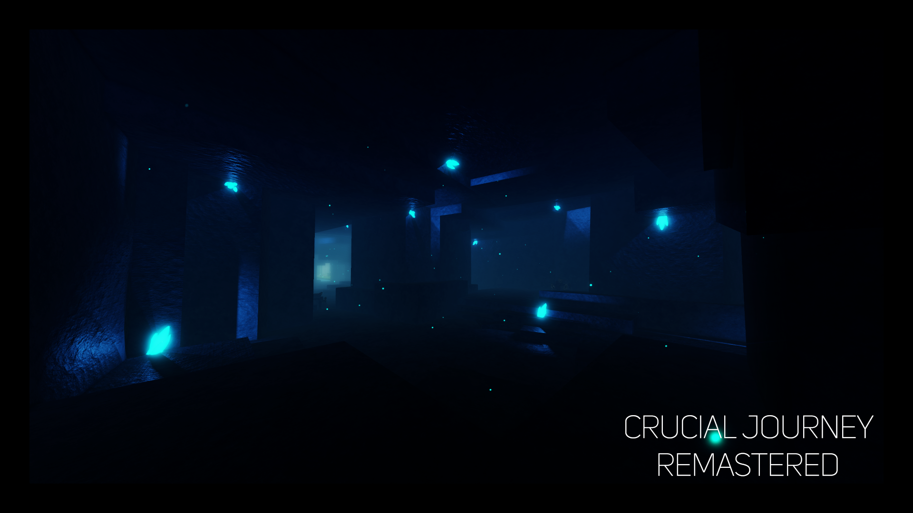
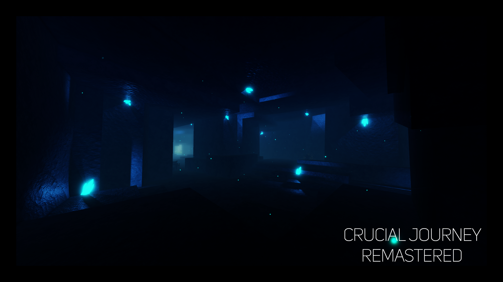
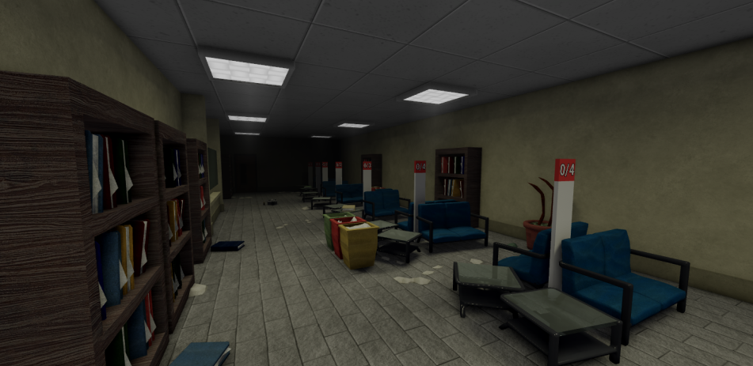

PROJECTS
Crucial Horizons
Crucial Horizons is a Critical Adventure-themed game that is about hitting flying tokens around the battleground.CH potentially is different to the other CA games as it has it's own unique core coded from scratch to make sure the code can be used to improve or add to the game new features.
Crucial Journey: Remastered
Crucial Journey: Remastered, is a game that's similar to Critical Adventure.CJR is about walking around dodging enemy attacks while hitting tokens to deal damage to the enemy.
The game itself is not in the best condition of seriousness as it has a huge ton of references included in it such as DOOM, TouHou and etc.

 


Hate's Uprising 2 Remastered
HU2R is a widely known undertale/deltarune fangame that consists of undertale-like lore and deltarune-like fighting system.The game even up till now contains a ton of daily players and entertaining gameplay to those who enjoy playing by themselves or with friends.

Undertale Legacy Mania
UTLM is a undertale fangame on ROBLOX that uses an open-source that gives you a simple PvE where you need to dodge and meele attack the opponent.The game is mostly about killing the enemies that are underground and gradually increasing your own LV.

COMMISSION
Here are some screenshots of my work for someone's commission on a dark themed horror map.Information about what this map is about is confidential for the commissioner's privacy.

OPENSOURCE MAP
A free open-source map preview of a Dragon Ball Super map that references the fight between Son Goku, Vegeta, Trunks against Goku Black and Zamasu.Open-source can be found in the Discord Server.
Crediting much appreciated.